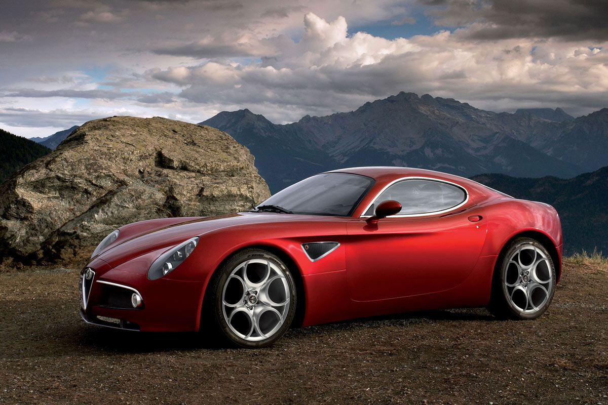
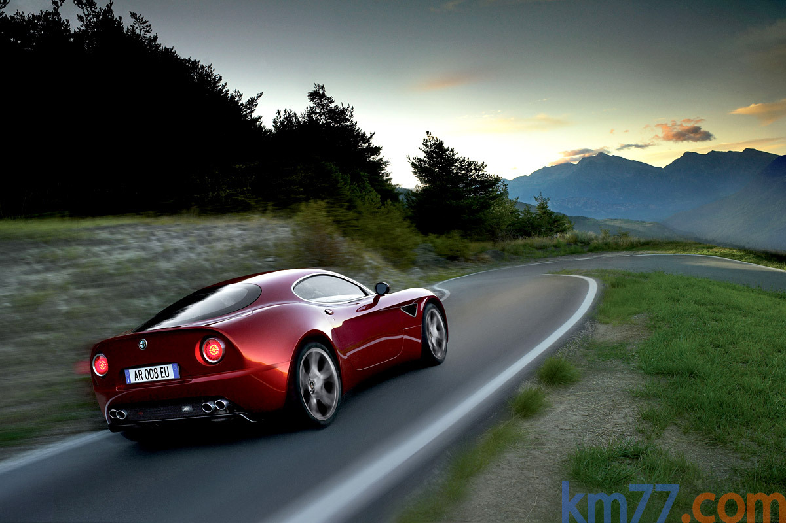

Es un cupé biplaza hecho sobre base Maserati, con motor central delantero y tracción trasera. El diseño es de Alfa Romeo; la producción y los principales elementos mecánicos, de Maserati.
La carrocería es obra del Centro Stile Alfa Romeo; el diseño es muy semejante al del prototipo que mostró Alfa Romeo en 2003. Este prototipo mide 4.278 mm de largo, 1.900 de ancho y 1.250 de alto; las dimensiones del coche de serie no serán muy distintas (salvo la altura).
Lo más notable de esta carrocería, por la información que ha dado Alfa Romeo hasta ahora, es que tiene un coeficiente de elevación aerodinámico negativo. Alfa Romeo no precisa si ese coeficiente es negativo en los dos ejes pero, en cualquier caso, es difícil que un coche sin alerones prominentes lo tenga. El 8C tiene un discreto alerón integrado bajo el paragolpes delantero (imagen). La carrocería es de fibra de carbono y está montada sobre chasis de acero. Hay también estructuras de fibra de carbono en elementos como los asientos.
Tiene algunos detalles más comunes hace décadas que ahora, como el marco cromado de las ventanillas o el par de pilotos redondos, aunque en este caso están combinados con una luz de niebla y una de marcha atrás disimuladas en la parte inferior del coche (imagen). Los pilotos principales tienen luces de diodos, en lugar de bombillas. Como antecedentes de diseño, Alfa Romeo cita a cupés como el Giulia TZ o el 33 Coupé Stradale.
El motor es un 8 cilindros en V de 90° de origen Maserati, con una cilindrada de 4.691 cm³ (los motores actuales de Maserati tienen 4.244). Su potencia máxima es 450 CV a 7.000 rpm; su potencia específica, por tanto es más bien alta (95,9 CV/l). Su par máximo es 470 Nm a 4.750 rpm; es un valor normal para el motor de un deportivo de esta cilindrada (la presión media llega a 12,6 bar). El régimen máximo es 7.500 rpm. Es un motor de aluminio con culatas con doble árbol de levas movidos por cadena y cuatro válvulas por cilindro. Tiene variación de fase continua en los árboles de levas de admisión.
El embrague es bidisco y el cambio está junto al eje trasero (una disposición que algunos llaman «transaxle»). El diferencial lleva un dispositivo mecánico para limitar el deslizamiento. El cambio automático (según nuestro criterio, lo es cualquier cambio que pueda cambiar sin intervención del conductor, más información) de seis velocidades. Tiene la estructura y el funcionamiento de uno manual, pero con automatismos para el embrague y el movimiento del cambio. El conductor puede elegir entre cinco programas de funcionamiento: Manual-Normal, Manual-Sport, Automático-Normal, Automático-Sport y «Ice» (para arrancar sobre una superficie deslizante). No tiene una palanca de cambio normal. En los dos programas manuales, el conductor puede seleccionar las marchas mediante dos palancas que están detrás del volante (imagen). La selección de los programas de funcionamiento se hace con botones (imagen).
La suspensión es semejante a la de un Maserati actual, con paralelogramos deformables en los dos ejes que tienen los elementos de unión y los bujes de aluminio (imagen de la suspensión en un Maserati). Los frenos son discos ventilados y perforados; en la parte trasera de los discos están las pinzas, que son de aluminio.
La medida de las ruedas es 245/35 20” en el eje delantero y 285/35 20” en el trasero; las llantas traseras tienen más bombeo que las delanteras. Entre los sistemas de seguridad activa que tiene, está un control de estabilidad (VDC para Alfa Romeo).
Gran parte de los recubrimientos interiores son de fibra de carbono, combinado con aluminio y cuero. Además del espacio en el maletero, hay un hueco tras los asientos que pueden ocupar unas maletas específicas (imagen). Entre los elementos de equipamiento que puede llevar están un programador de velocidad, un sistema de ayuda al aparcamiento, arranque mediante un botón o freno de estacionamiento eléctrico.
Alfa Romeo utilizó las siglas «8C» durante los años 30 y 40 para designar a los coches que tenían el motor de ocho cilindros, obra del ingeniero Vittorio Jano (imagen). El término «Competizione» es una referencia al «6C 2500 Competizione» con el que Juan Manuel Fangio participó en las Mil Millas de 1950. El último cupé de Alfa Romeo concebido para llevar un motor V8 fue el Montreal, aunque posteriormente hubo alguna versión del Alfetta GTV con motor V8. El último cupé de Alfa Romeo con tracción trasera fue el SZ.